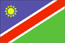
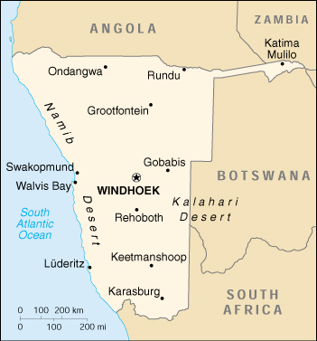

{kind=link}


| Namibia |  |
|
|  | |
| Introduction |
Background: South Africa occupied the German colony of Sud-West Afrika during World War I and administered it as a mandate until after World War II when it annexed the territory. In 1966 the Marxist South-West Africa People's Organization (SWAPO) guerrilla group launched a war of independence for the area that was soon named Namibia, but it was not until 1988 that South Africa agreed to end its administration in accordance with a UN peace plan for the entire region. Independence came in 1990.
| Geography |
Location: Southern Africa, bordering the South Atlantic Ocean, between Angola and South Africa
Geographic coordinates: 22 00 S, 17 00 E
Map references: Africa
Area:
total:
825,418 sq km
land:
825,418 sq km
water:
0 sq km
Area - comparative: slightly more than half the size of Alaska
Land boundaries:
total:
3,824 km
border countries:
Angola 1,376 km, Botswana 1,360 km, South Africa 855 km, Zambia 233 km
Coastline: 1,572 km
Maritime claims:
contiguous zone:
24 nm
exclusive economic zone:
200 nm
territorial sea:
12 nm
Climate: desert; hot, dry; rainfall sparse and erratic
Terrain: mostly high plateau; Namib Desert along coast; Kalahari Desert in east
Elevation extremes:
lowest point:
Atlantic Ocean 0 m
highest point:
Konigstein 2,606 m
Natural resources:
diamonds, copper, uranium, gold, lead, tin, lithium, cadmium, zinc, salt, vanadium, natural gas, hydropower, fish
note:
suspected deposits of oil, coal, and iron ore
Land use:
arable land:
1%
permanent crops:
0%
permanent pastures:
46%
forests and woodland:
22%
other:
31% (1993 est.)
Irrigated land: 60 sq km (1993 est.)
Natural hazards: prolonged periods of drought
Environment - current issues: very limited natural fresh water resources; desertification
Environment - international agreements:
party to:
Biodiversity, Climate Change, Desertification, Endangered Species, Hazardous Wastes, Law of the Sea, Ozone Layer Protection, Wetlands
signed, but not ratified:
none of the selected agreements
| People |
Population:
1,771,327
note:
estimates for this country explicitly take into account the effects of excess mortality due to AIDS; this can result in lower life expectancy, higher infant mortality and death rates, lower population and growth rates, and changes in the distribution of population by age and sex than would otherwise be expected (July 2000 est.)
Age structure:
0-14 years:
43% (male 384,900; female 375,282)
15-64 years:
53% (male 468,942; female 475,504)
65 years and over:
4% (male 28,905; female 37,794) (2000 est.)
Population growth rate: 1.57% (2000 est.)
Birth rate: 35.23 births/1,000 population (2000 est.)
Death rate: 19.49 deaths/1,000 population (2000 est.)
Net migration rate: 0 migrant(s)/1,000 population (2000 est.)
Sex ratio:
at birth:
1.03 male(s)/female
under 15 years:
1.03 male(s)/female
15-64 years:
0.99 male(s)/female
65 years and over:
0.76 male(s)/female
total population:
0.99 male(s)/female (2000 est.)
Infant mortality rate: 70.88 deaths/1,000 live births (2000 est.)
Life expectancy at birth:
total population:
42.46 years
male:
44.33 years
female:
40.53 years (2000 est.)
Total fertility rate: 4.89 children born/woman (2000 est.)
Nationality:
noun:
Namibian(s)
adjective:
Namibian
Ethnic groups:
black 87.5%, white 6%, mixed 6.5%
note:
about 50% of the population belong to the Ovambo tribe and 9% to the Kavangos tribe; other ethnic groups are: Herero 7%, Damara 7%, Nama 5%, Caprivian 4%, Bushmen 3%, Baster 2%, Tswana 0.5%
Religions: Christian 80% to 90% (Lutheran 50% at least), indigenous beliefs 10% to 20%
Languages: English 7% (official), Afrikaans common language of most of the population and about 60% of the white population, German 32%, indigenous languages: Oshivambo, Herero, Nama
Literacy:
definition:
age 15 and over can read and write
total population:
38%
male:
45%
female:
31% (1960 est.)
| Government |
Country name:
conventional long form:
Republic of Namibia
conventional short form:
Namibia
Data code: WA
Government type: republic
Capital: Windhoek
Administrative divisions: 13 regions; Caprivi, Erongo, Hardap, Karas, Khomas, Kunene, Ohangwena, Okavango, Omaheke, Omusati, Oshana, Oshikoto, Otjozondjupa
Independence: 21 March 1990 (from South African mandate)
National holiday: Independence Day, 21 March (1990)
Constitution: ratified 9 February 1990; effective 12 March 1990
Legal system: based on Roman-Dutch law and 1990 constitution
Suffrage: 18 years of age; universal
Executive branch:
chief of state:
President Samuel NUJOMA (since 21 March 1990); note - the president is both the chief of state and head of government
head of government:
President Samuel NUJOMA (since 21 March 1990); note - the president is both the chief of state and head of government
cabinet:
Cabinet appointed by the president from among the members of the National Assembly
elections:
president elected by popular vote for a five-year term; election last held 30 November-1 December 1999 (next to be held NA 2004)
election results:
Samuel NUJOMA elected president; percent of vote - Samuel NUJOMA 77%
Legislative branch:
bicameral legislature consists of the National Council (26 seats; two members are chosen from each regional council to serve six-year terms) and the National Assembly (72 seats; members are elected by popular vote to serve five-year terms)
elections:
National Council - elections for regional councils, to determine members of the National Council, held 30 November-1 December 1998 (next to be held by December 2004); National Assembly - last held 30 November-1 December 1999 (next to be held by December 2004)
election results:
National Council - percent of vote by party - NA; seats by party - SWAPO 21, DTA 4, UDF 1; National Assembly - percent of vote by party - SWAPO 77%, COD 10%, DTA 9%, UDF 3%, MAG 1%; seats by party - SWAPO 55, COD 7, DTA 7, UDF 2, MAG 1,
note:
the National Council is a purely advisory body
Judicial branch: Supreme Court, judges appointed by the president
Political parties and leaders: Congress of Democrats or COD [Ben ULENGA]; Democratic Turnhalle Alliance of Namibia or DTA [Katuutire KAURA, president]; Monitor Action Group or MAG [Kosie PRETORIUS]; South West Africa People's Organization or SWAPO [Sam NUJOMA]; United Democratic Front or UDF [Justus GAROEB]
International organization participation: ACP, AfDB, C, CCC, ECA, FAO, G-77, IAEA, IBRD, ICAO, ICRM, IFAD, IFC, IFRCS, ILO, IMF, IMO, Intelsat, Interpol, IOC, IOM (observer), ISO (subscriber), ITU, NAM, OAU, OPCW, SACU, SADC, UN, UN Security Council (temporary), UNCTAD, UNESCO, UNHCR, UNIDO, UPU, WCL, WHO, WIPO, WMO, WToO, WTrO
Diplomatic representation in the US:
chief of mission:
Ambassador Leonard Nangolo IIPUMBU
chancery:
1605 New Hampshire Avenue NW, Washington, DC 20009
telephone:
[1] (202) 986-0540
FAX:
[1] (202) 986-0443
Diplomatic representation from the US:
chief of mission:
Ambassador Jeffrey A. BADER
embassy:
Ausplan Building, 14 Lossen Street, Private Bag 12029 Ausspannplatz, Windhoek
mailing address:
use embassy street address
telephone:
[264] (61) 221601
FAX:
[264] (61) 229792
Flag description: a large blue triangle with a yellow sunburst fills the upper left section and an equal green triangle (solid) fills the lower right section; the triangles are separated by a red stripe that is contrasted by two narrow white-edge borders
| Economy |
Economy - overview: The economy is heavily dependent on the extraction and processing of minerals for export. Mining accounts for 20% of GDP. Namibia is the fourth-largest exporter of nonfuel minerals in Africa and the world's fifth-largest producer of uranium. Rich alluvial diamond deposits make Namibia a primary source for gem-quality diamonds. Namibia also produces large quantities of lead, zinc, tin, silver, and tungsten. Half of the population depends on agriculture (largely subsistence agriculture) for its livelihood. Namibia must import some of its food. Although per capita GDP is four times the per capita GDP of Africa's poorer countries, the majority of Namibia's people live in pronounced poverty because of large-scale unemployment, the great inequality of income distribution, and the large amount of wealth going to foreigners. The Namibian economy has close links to South Africa. GDP growth should improve in 2000-01, because of gains in the diamond and fish sectors. Agreement has been reached on the privatization of several more enterprises in coming years, which should stimulate long-run foreign investment.
GDP: purchasing power parity - $7.1 billion (1999 est.)
GDP - real growth rate: 3% (1999 est.)
GDP - per capita: purchasing power parity - $4,300 (1999 est.)
GDP - composition by sector:
agriculture:
12%
industry:
30%
services:
58% (1998 est.)
Population below poverty line: NA%
Household income or consumption by percentage share:
lowest 10%:
NA%
highest 10%:
NA%
Inflation rate (consumer prices): 8.5% (1999)
Labor force: 500,000
Labor force - by occupation: agriculture 47%, industry 25%, services 28% (1999 est.)
Unemployment rate: 30% to 40%, including underemployment (1997 est.)
Budget:
revenues:
$883 million
expenditures:
$950 million, including capital expenditures of $NA (1998)
Industries: meat packing, fish processing, dairy products; mining (diamond, lead, zinc, tin, silver, tungsten, uranium, copper)
Industrial production growth rate: 10% (1994)
Electricity - production: 1.198 billion kWh (1999)
Electricity - production by source:
fossil fuel:
2%
hydro:
98%
nuclear:
0%
other:
0% (1999)
Electricity - consumption: 1.81 billion kWh (1999)
Electricity - exports: 56 million kWh (1999)
Electricity - imports:
890 million kWh (1999)
note:
imports electricity from South Africa
Agriculture - products: millet, sorghum, peanuts; livestock; fish
Exports: $1.4 billion (f.o.b., 1999 est.)
Exports - commodities: diamonds, copper, gold, zinc, lead, uranium; cattle, processed fish, karakul skins
Exports - partners: UK 43%, South Africa 26%, Spain 14%, France 8%, Japan (1998 est.)
Imports: $1.5 billion (f.o.b., 1999 est.)
Imports - commodities: foodstuffs; petroleum products and fuel, machinery and equipment, chemicals
Imports - partners: South Africa 84%, Germany, US, Japan (1995 est.)
Debt - external: $159 million (1999 est.)
Economic aid - recipient: $127 million (1998)
Currency: 1 Namibian dollar (N$) = 100 cents
Exchange rates: Namibian dollars (N$) per US$1 - 6.12439 (January 2000), 6.10948 (1999), 5.52828 (1998), 4.60796 (1997), 4.29935 (1996), 3.62709 (1995)
Fiscal year: 1 April - 31 March
| Communications |
Telephones - main lines in use: 100,848 (1997)
Telephones - mobile cellular: 20,000 (1998)
Telephone system:
domestic:
good urban services; fair rural service; microwave radio relay links major towns; connections to other populated places are by open wire; 100% digital
international:
fiber-optic cable to South Africa, microwave radio relay link to Botswana, direct links to other neighboring countries; connected to Africa ONE and South African Far East (SAFE) submarine cables through South Africa; satellite earth stations - 4 Intelsat
Radio broadcast stations: AM 2, FM 34, shortwave 5 (1998)
Radios: 232,000 (1997)
Television broadcast stations: 8 (plus about 20 low-power repeaters) (1997)
Televisions: 60,000 (1997)
Internet Service Providers (ISPs): 4 (1999)
| Transportation |
Railways:
total:
2,382 km
narrow gauge:
2,382 km 1.067-m gauge; single track (1995)
Highways:
total:
63,258 km
paved:
5,250 km
unpaved:
58,008 km (1997 est.)
Ports and harbors: Luderitz, Walvis Bay
Merchant marine: none (1999 est.)
Airports: 135 (1999 est.)
Airports - with paved runways:
total:
22
over 3,047 m:
2
2,438 to 3,047 m:
2
1,524 to 2,437 m:
15
914 to 1,523 m:
3 (1999 est.)
Airports - with unpaved runways:
total:
113
2,438 to 3,047 m:
2
1,524 to 2,437 m:
21
914 to 1,523 m:
69
under 914 m:
21 (1999 est.)
| Military |
Military branches: National Defense Force (Army), Police
Military manpower - availability:
males age 15-49:
416,529 (2000 est.)
Military manpower - fit for military service:
males age 15-49:
248,581 (2000 est.)
Military expenditures - dollar figure: $90 million (FY97/98)
Military expenditures - percent of GDP: 2.6% (FY97/98)
| Transnational Issues |
Disputes - international: dispute with Botswana over uninhabited Kasikili (Sidudu) Island in Linyanti (Chobe) River resolved by the ICJ in favor of Botswana (13 December 1999); at least one other island in Linyanti River is contested